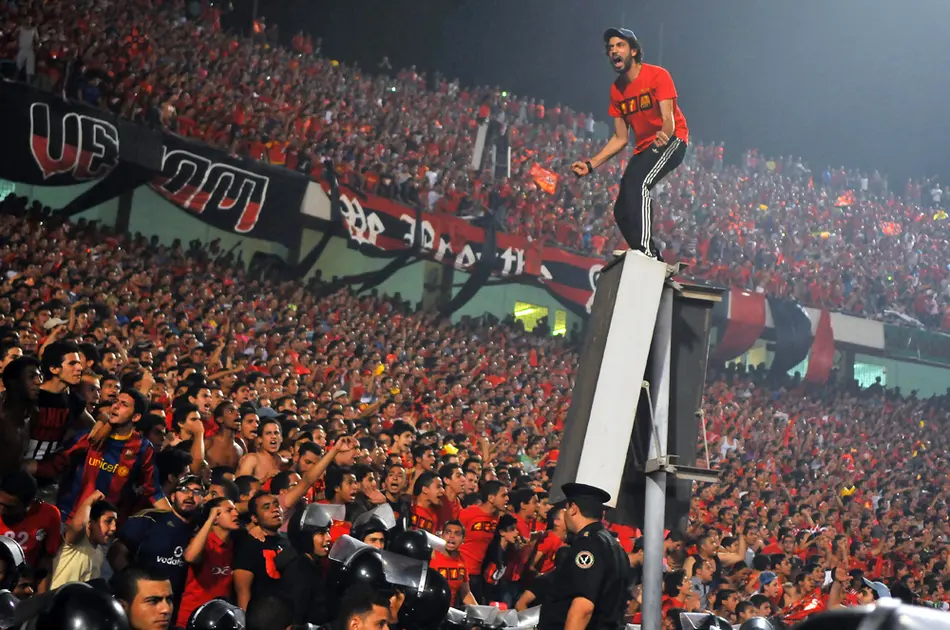
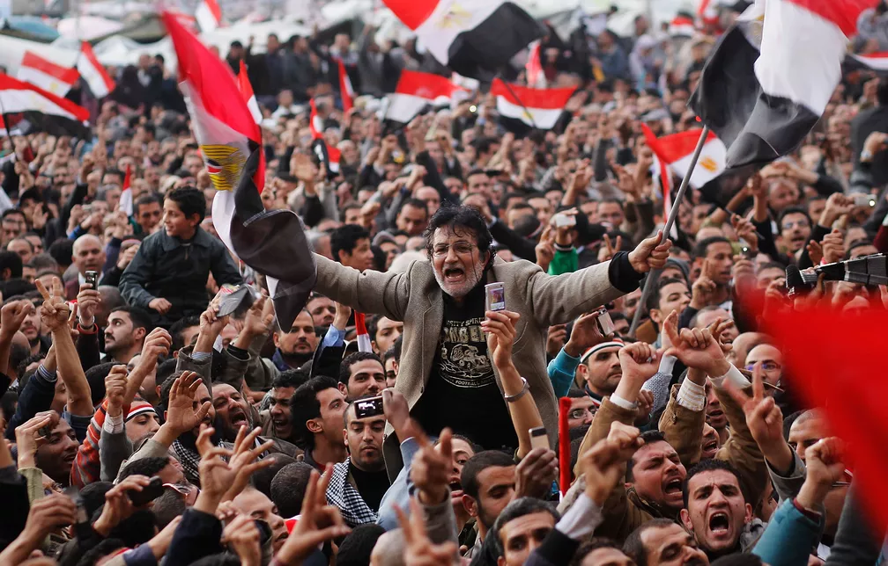

Os egípcios nunca passaram da primeira fase em nenhuma das suas três participações. A melhor campanha em pontuação foi em 1990: empate com a Holanda, empate com a Irlanda e derrota por 1 a 0 para a Inglaterra na rodada final — quando ainda tinham chances de classificação.
Seleção
HISTÓRIA
A melhor Copa
do Mundo do
Egito
Os egípcios nunca passaram da primeira fase em nenhuma das suas três participações. A melhor campanha em pontuação foi em 1990: empate com a Holanda, empate com a Irlanda e derrota por 1 a 0 para a Inglaterra na rodada final — quando ainda tinham chances de classificação.
1934
A estreia histórica. O Egito se tornou a primeira nação africana e árabe a disputar uma Copa do Mundo, sendo eliminado pelo formato mata-mata após derrota de 4 a 2 para a Hungria.
2018
O retorno ao torneio depois de 28 anos, com toda a expectativa depositada em Mohamed Salah. Salah marcou contra a Rússia e a Arábia Saudita, igualando o recorde histórico de Fawzi — mas os Faraós voltaram a cair na fase de grupos.


Momentos inesquecíveis
01
O gol de Abdelrahman Fawzi em 1934 é o marco fundador do futebol africano em Copas — o primeiro tento do continente na história do torneio.
02
A classificação para a Copa veio em um duelo tenso contra a Argélia, conhecido até hoje como o "Jogo do Ódio" — decidido com um gol nos primeiros quatro minutos diante de mais de 100 mil pessoas no Cairo.
03
Na estreia de 1990, o empate de 1 a 1 com a Holanda foi considerado um resultado impressionante para o padrão egípcio na época.
04
Salah pode se tornar o maior artilheiro isolado do país em Copas em 2026, superando a marca de dois gols que divide com Fawzi desde 1934.
Detalhes
culturais do país